1INF · Laboratorio · venerdì 06/11/2026 · ora 4 (11-12) · Lazarus
Ora 4 · Il convertitore che parla
الساعة 4 · المحوّل الذي يتكلم
第 4 节 · 会说话的换算器
La pagina viene aggiornata spesso durante la lezione: premi F5 per vedere la versione nuova. · اضغط F5 لرؤية النسخة الجديدة. · 按 F5 查看新版本。
Hai un dubbio sul lavoro? Scrivi all'assistente in fondo alla pagina: risponde subito. Il Professore serve per un PC rotto.
Chi sei?
Scrivi nome e cognome: serve al cruscotto e alla consegna.
اكتب الاسم واللقب: تحتاجه لوحة المتابعة والتسليم.
写名字和姓：进度面板和提交都需要。
1Primi 10 minuti: i recuperi
أول 10 دقائق: التعويض
前 10 分钟：补做
Apri il cruscotto e scegli il tuo nome in «Io sono». Se vedi «Ti manca», fai il recupero con il bottone qui sotto. Puoi rifarlo: vale il migliore. Se non ti manca niente, premi «Ho fatto!» e vai al passo 2.
افتح لوحة المتابعة واختر اسمك في «Io sono». إذا رأيت «Ti manca»، قم بالتعويض بالزر في الأسفل. يمكنك الإعادة: تُحسب أفضل نتيجة. إذا لم ينقصك شيء، اضغط «Ho fatto!» وانتقل إلى الخطوة 2.
打开进度面板，在「Io sono」选你的名字。如果看到「Ti manca」，用下面的按钮补做。可以重做：算最好的一次。如果什么都不缺，按「Ho fatto!」去第 2 步。
Apri il cruscotto · افتح لوحة المتابعة · 打开进度面板Recupero: quiz «Testo o numero?» · تعويض: اختبار نص أم رقم · 补做：测验「文字还是数字」Recupero: Sicurezza · تعويض: السلامة · 补做：安全课
2La teoria in 1 minuto: una frase è fatta di pezzi
النظرية في دقيقة: الجملة مكوّنة من قطع
一分钟理论：句子是由小块组成的
Una frase in Lazarus è una STRINGA. Si costruisce come un treno: ogni pezzo è un vagone, il + li attacca.
الجملة في Lazarus هي STRINGA (نص). نبنيها مثل القطار: كل قطعة عربة، و + يربطها.
Lazarus 里的句子是字符串 STRINGA。像火车一样搭起来：每一块是一节车厢，+ 把它们连起来。
'7' + ' km' = '7 km'. Lo spazio fa parte del testo: senza spazio esce '7km'.
'7' + ' km' = '7 km'. المسافة جزء من النص: بدون مسافة يخرج '7km'.
'7' + ' km' = '7 km'。空格也是文字的一部分：没有空格就变成 '7km'。
Il conto si fa con i numeri: StrToInt trasforma il testo in numero, IntToStr trasforma il risultato in testo per metterlo nella frase.
الحساب يكون بالأرقام: StrToInt يحوّل النص إلى رقم، و IntToStr يحوّل النتيجة إلى نص لنضعها في الجملة.
计算要用数字：StrToInt 把文字变成数字，IntToStr 把结果变成文字，放进句子里。
- Una frase è testo: i pezzi si attaccano con il +. '7' + ' km' = '7 km'
- StrToInt = da testo a numero (prima del conto).
- IntToStr = da numero a testo (prima di metterlo nella frase).
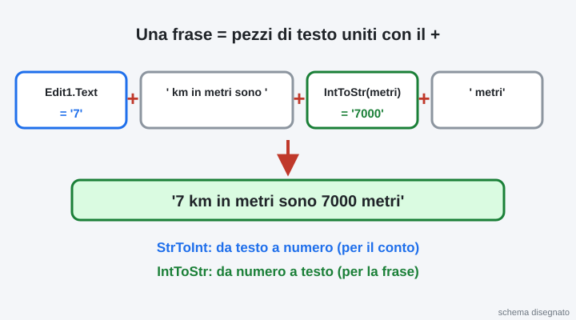
3Gioca con le stringhe: che cosa esce?
العب بالنصوص: ماذا يخرج؟
玩字符串：会得到什么？
Rispondi a tutte e 5. Quando sono tutte giuste, il passo diventa verde da solo.
أجب عن الخمسة كلها. عندما تكون كلها صحيحة، تصبح الخطوة خضراء وحدها.
5 道都要回答。全部答对后，这一步会自己变绿。
'7' + ' km' dà…
'7' + ' km' يعطي…
'7' + ' km' 得到……
'7' + '7' dà…
'7' + '7' يعطي…
'7' + '7' 得到……
7 + 7 (numeri, senza apici) dà…
7 + 7 (أرقام بدون علامات اقتباس) يعطي…
7 + 7（数字，没有引号）得到……
Per mettere il numero 7000 dentro la frase scrivo…
لوضع الرقم 7000 داخل الجملة أكتب…
要把数字 7000 放进句子，要写……
Edit1.Text = '7'. Edit1.Text + ' km in metri sono ' + IntToStr(7000) + ' metri' dà…
Edit1.Text = '7'. Edit1.Text + ' km in metri sono ' + IntToStr(7000) + ' metri' يعطي…
Edit1.Text = '7'。Edit1.Text + ' km in metri sono ' + IntToStr(7000) + ' metri' 得到……
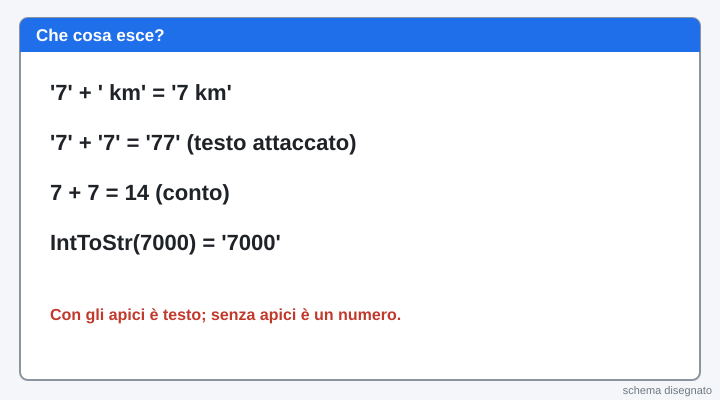
4Vinci subito: il progetto nuovo
فوز سريع: المشروع الجديد
马上成功：新项目
Apri Lazarus. Menu Progetto, Nuovo progetto…, scegli Applicazione e premi OK.
افتح Lazarus. القائمة Progetto ثم Nuovo progetto…، اختر Applicazione واضغط OK.
打开 Lazarus。菜单 Progetto，Nuovo progetto…，选 Applicazione，按 OK。
Subito: menu File, Salva tutto. In Documenti crea la cartella convertitore-parla e salva lì (premi Salva 2 volte).
فوراً: القائمة File ثم Salva tutto. في Documenti أنشئ المجلد convertitore-parla واحفظ فيه (اضغط Salva مرتين).
马上：菜单 File，Salva tutto。在 Documenti 里新建文件夹 convertitore-parla，保存在里面（按两次 Salva）。
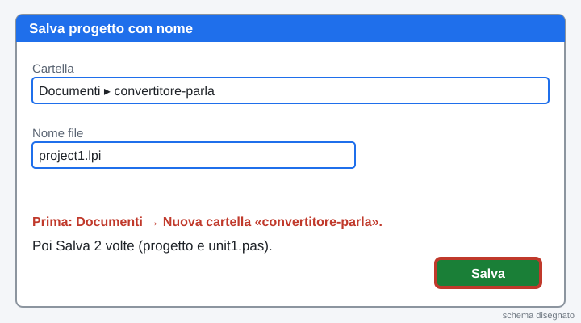
5Metti i pezzi sulla finestra
ضع القطع على النافذة
把组件放到窗口上
Dalla scheda Standard (in alto) metti sulla finestra grigia: 2 Edit, 1 Label e 5 Button. Clic sul pezzo, poi clic sulla finestra.
من تبويب Standard (في الأعلى) ضع على النافذة الرمادية: 2 Edit و 1 Label و 5 Button. انقر على القطعة ثم على النافذة.
从上面的 Standard 标签，在灰色窗口上放：2 个 Edit，1 个 Label，5 个 Button。先点组件，再点窗口。
Edit1 = il numero. Edit2 = il tuo nome. Label1 = la frase: nell'Ispettore oggetti metti WordWrap = True e allargala bene.
Edit1 = الرقم. Edit2 = اسمك. Label1 = الجملة: في Ispettore oggetti اجعل WordWrap = True ووسّعها جيداً.
Edit1 = 数字。Edit2 = 你的名字。Label1 = 句子：在 Ispettore oggetti 里把 WordWrap 设为 True，把它拉宽。
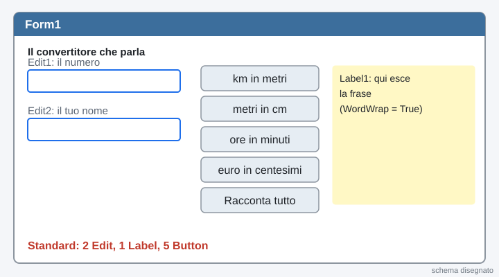
6Le scritte dei bottoni (Caption)
كتابات الأزرار (Caption)
按钮上的字（Caption）
Clic su un bottone. Nell'Ispettore oggetti, a sinistra, cambia Caption: Button1 = km in metri, Button2 = metri in cm, Button3 = ore in minuti, Button4 = euro in centesimi, Button5 = Racconta tutto.
انقر على زر. في Ispettore oggetti على اليسار غيّر Caption: Button1 = km in metri، Button2 = metri in cm، Button3 = ore in minuti، Button4 = euro in centesimi، Button5 = Racconta tutto.
点一个按钮。在左边的 Ispettore oggetti 里改 Caption：Button1 = km in metri，Button2 = metri in cm，Button3 = ore in minuti，Button4 = euro in centesimi，Button5 = Racconta tutto。
Togli la scritta da Edit1 e Edit2: proprietà Text vuota.
احذف الكتابة من Edit1 و Edit2: خاصية Text فارغة.
把 Edit1 和 Edit2 里的字删掉：Text 属性留空。

7Livello 1: la prima frase (km in metri)
المستوى 1: الجملة الأولى (كم إلى متر)
第 1 级：第一句话（公里变米）
Fai doppio clic sul bottone «km in metri»: si apre il codice. Tra begin e end il programma deve: leggere Edit1, fare × 1000, scrivere la frase.
انقر نقراً مزدوجاً على زر «km in metri»: يُفتح الكود. بين begin و end يجب أن يقرأ البرنامج Edit1، يضرب × 1000، ويكتب الجملة.
在「km in metri」按钮上双击：代码会打开。在 begin 和 end 之间，程序要：读 Edit1，乘以 1000，写出句子。
La frase giusta, con 7: 7 km in metri sono 7000 metri. Prova da solo, poi usa gli aiuti uno alla volta.
الجملة الصحيحة مع 7: 7 km in metri sono 7000 metri. جرّب وحدك، ثم استعمل المساعدات واحدة واحدة.
用 7 的正确句子：7 km in metri sono 7000 metri。先自己试，再一个一个地用提示。
Aiuto 1: l'idea
Tre righe: 1) km := StrToInt(Edit1.Text); 2) metri := km * 1000; 3) Label1.Caption := … la frase con i pezzi uniti dal +.
ثلاثة أسطر: 1) km := StrToInt(Edit1.Text); 2) metri := km * 1000; 3) Label1.Caption := … الجملة بالقطع المربوطة بـ +.
三行：1) km := StrToInt(Edit1.Text); 2) metri := km * 1000; 3) Label1.Caption := ……用 + 连起来的句子。
Aiuto 2: il codice con i buchi
procedure TForm1.Button1Click(Sender: TObject);
var
km, metri: Integer;
begin
km := ________(Edit1.Text); // da testo a numero
metri := km * ____; // 1 km = 1000 metri
Label1.Caption := Edit1.Text + ' km in metri sono ' + ________(metri) + ' metri';
end;Aiuto 3: il codice completo
procedure TForm1.Button1Click(Sender: TObject);
var
km, metri: Integer;
begin
km := StrToInt(Edit1.Text);
metri := km * 1000;
Label1.Caption := Edit1.Text + ' km in metri sono ' + IntToStr(metri) + ' metri';
end;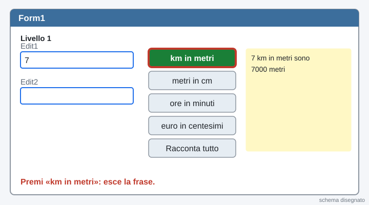
8Prova: premi F9
جرّب: اضغط F9
试一试：按 F9
Premi F9. Scrivi 7 nella prima casella e premi «km in metri». Leggi la frase: gli spazi sono giusti?
اضغط F9. اكتب 7 في الخانة الأولى واضغط «km in metri». اقرأ الجملة: هل المسافات صحيحة؟
按 F9。在第一个框里写 7，按「km in metri」。读句子：空格对吗？
Esce «is an invalid integer»? Nella casella c'è una lettera o è vuota: scrivi solo cifre e riprova.
يظهر «is an invalid integer»؟ في الخانة حرف أو هي فارغة: اكتب أرقاماً فقط وحاول مرة أخرى.
出现「is an invalid integer」？框里有字母或者是空的：只写数字，再试一次。
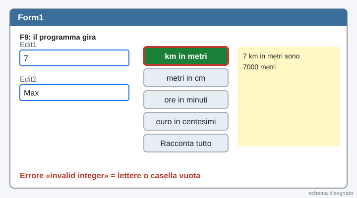
9Livello 2: altre 3 conversioni
المستوى 2: 3 تحويلات أخرى
第 2 级：再做 3 个换算
Stessa idea, cambia solo il numero e le parole: metri in cm × 100, ore in minuti × 60, euro in centesimi × 100. Doppio clic su ogni bottone.
نفس الفكرة، يتغير الرقم والكلمات فقط: متر إلى سنتيمتر × 100، ساعات إلى دقائق × 60، يورو إلى سنت × 100. نقر مزدوج على كل زر.
同样的想法，只改数字和词：米变厘米 × 100，小时变分钟 × 60，欧元变分 × 100。每个按钮都双击。
Con 7: «7 metri in centimetri sono 700 centimetri», «7 ore in minuti sono 420 minuti», «7 euro in centesimi sono 700 centesimi».
مع 7: «7 metri in centimetri sono 700 centimetri»، «7 ore in minuti sono 420 minuti»، «7 euro in centesimi sono 700 centesimi».
用 7：「7 metri in centimetri sono 700 centimetri」，「7 ore in minuti sono 420 minuti」，「7 euro in centesimi sono 700 centesimi」。
Aiuto 1: l'idea
Copia il codice del livello 1 e cambia: il nome delle variabili, il numero (100, 60, 100) e le parole della frase.
انسخ كود المستوى 1 وغيّر: أسماء المتغيرات، الرقم (100، 60، 100) وكلمات الجملة.
复制第 1 级的代码，改：变量名、数字（100、60、100）和句子里的词。
Aiuto 2: il codice completo dei 3 bottoni
procedure TForm1.Button2Click(Sender: TObject);
var
metri, cm: Integer;
begin
metri := StrToInt(Edit1.Text);
cm := metri * 100;
Label1.Caption := Edit1.Text + ' metri in centimetri sono ' + IntToStr(cm) + ' centimetri';
end;
procedure TForm1.Button3Click(Sender: TObject);
var
ore, minuti: Integer;
begin
ore := StrToInt(Edit1.Text);
minuti := ore * 60;
Label1.Caption := Edit1.Text + ' ore in minuti sono ' + IntToStr(minuti) + ' minuti';
end;
procedure TForm1.Button4Click(Sender: TObject);
var
euro, centesimi: Integer;
begin
euro := StrToInt(Edit1.Text);
centesimi := euro * 100;
Label1.Caption := Edit1.Text + ' euro in centesimi sono ' + IntToStr(centesimi) + ' centesimi';
end;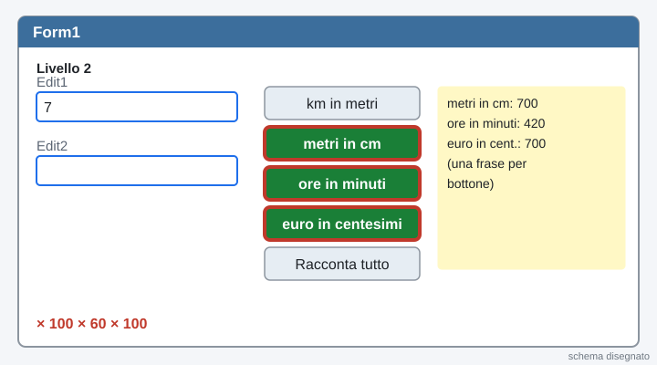
10Livello 3: la frase finale composta
المستوى 3: الجملة النهائية المركّبة
第 3 级：最后的组合句子
Il bottone Racconta tutto costruisce UNA frase lunga, un pezzo alla volta: Label1.Caption := Label1.Caption + … aggiunge testo alla fine della frase che c'è già.
زر Racconta tutto يبني جملة طويلة واحدة، قطعة قطعة: Label1.Caption := Label1.Caption + … يضيف نصاً في آخر الجملة الموجودة.
Racconta tutto 按钮一块一块地搭出一个长句子：Label1.Caption := Label1.Caption + … 把文字加在已有句子的后面。
Scrivi il tuo nome in Edit2 e 7 in Edit1. Deve uscire: Ciao Max! Con 7: 7000 metri, 700 centimetri, 420 minuti, 700 centesimi. (con il tuo nome al posto di Max).
اكتب اسمك في Edit2 و 7 في Edit1. يجب أن يخرج: Ciao Max! Con 7: 7000 metri, 700 centimetri, 420 minuti, 700 centesimi. (باسمك مكان Max).
在 Edit2 写你的名字，在 Edit1 写 7。要出现：Ciao Max! Con 7: 7000 metri, 700 centimetri, 420 minuti, 700 centesimi.（用你的名字代替 Max）。
Aiuto 1: l'idea
Prima riga: Label1.Caption := 'Ciao ' + Edit2.Text + '! Con ' + Edit1.Text + ':'; poi 4 righe che aggiungono un pezzo: Label1.Caption := Label1.Caption + ' ' + IntToStr(n * 1000) + ' metri,';
السطر الأول: Label1.Caption := 'Ciao ' + Edit2.Text + '! Con ' + Edit1.Text + ':'; ثم 4 أسطر تضيف قطعة.
第一行：Label1.Caption := 'Ciao ' + Edit2.Text + '! Con ' + Edit1.Text + ':'; 然后 4 行，每行加一块。
Aiuto 2: il codice completo
procedure TForm1.Button5Click(Sender: TObject);
var
n: Integer;
begin
n := StrToInt(Edit1.Text);
Label1.Caption := 'Ciao ' + Edit2.Text + '! Con ' + Edit1.Text + ':';
Label1.Caption := Label1.Caption + ' ' + IntToStr(n * 1000) + ' metri,';
Label1.Caption := Label1.Caption + ' ' + IntToStr(n * 100) + ' centimetri,';
Label1.Caption := Label1.Caption + ' ' + IntToStr(n * 60) + ' minuti,';
Label1.Caption := Label1.Caption + ' ' + IntToStr(n * 100) + ' centesimi.';
end;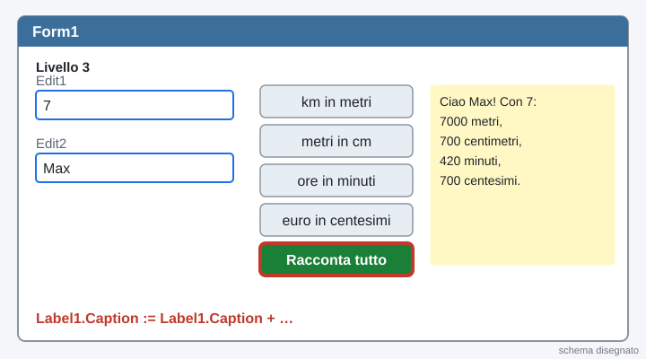
11Fallo tuo: la TUA conversione e una frase scherzosa
اصنعه بنفسك: تحويلك وجملة مضحكة
自己做：你的换算和一句好笑的话
Aggiungi Button6 con una conversione scelta da te: pizze in fette (× 8), settimane in giorni (× 7), giorni in ore (× 24), minuti in secondi (× 60), anni in mesi (× 12)… o un'idea tua.
أضف Button6 بتحويل تختاره: بيتزا إلى قطع (× 8)، أسابيع إلى أيام (× 7)، أيام إلى ساعات (× 24)، دقائق إلى ثوانٍ (× 60)، سنوات إلى أشهر (× 12)… أو فكرتك.
加一个 Button6，做你自己选的换算：比萨变块（× 8），星期变天（× 7），天变小时（× 24），分钟变秒（× 60），年变月（× 12）……或者你的想法。
Alla fine aggiungi una frase scherzosa con Label1.Caption := Label1.Caption + '…';
في النهاية أضف جملة مضحكة بـ Label1.Caption := Label1.Caption + '…';
最后用 Label1.Caption := Label1.Caption + '…'; 加一句好笑的话。
Aiuto 1: un esempio (pizze in fette)
procedure TForm1.Button6Click(Sender: TObject);
var
pizze, fette: Integer;
begin
pizze := StrToInt(Edit1.Text);
fette := pizze * 8;
Label1.Caption := Edit1.Text + ' pizze sono ' + IntToStr(fette) + ' fette';
Label1.Caption := Label1.Caption + ': chiama gli amici, ma la prima fetta è mia!';
end;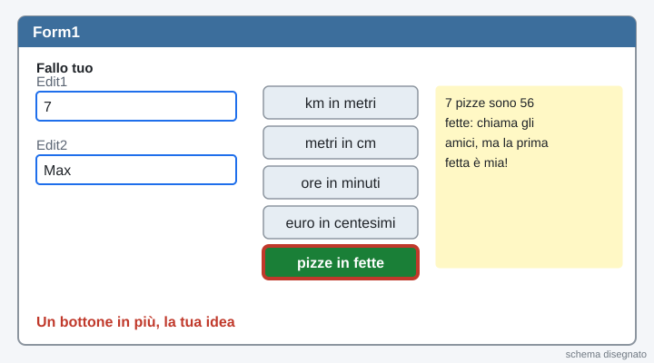
12Salva e fai lo screenshot
احفظ والتقط صورة الشاشة
保存并截图
Premi Ctrl + S. Premi F9, scrivi un numero e premi «Racconta tutto».
اضغط Ctrl + S. اضغط F9، اكتب رقماً واضغط «Racconta tutto».
按 Ctrl + S。按 F9，写一个数字，按「Racconta tutto」。
Premi Win + Maiusc + S e trascina un rettangolo sul programma. In basso a destra clicca l'avviso, poi il dischetto Salva: cartella convertitore-parla, nome ora4_screenshot.png.
اضغط Win + Shift + S واسحب مستطيلاً على البرنامج. في الأسفل يميناً انقر الإشعار، ثم القرص Salva: المجلد convertitore-parla، الاسم ora4_screenshot.png.
按 Win + Shift + S，在程序上拖一个方框。点右下角的通知，再点软盘 Salva：文件夹 convertitore-parla，名字 ora4_screenshot.png。
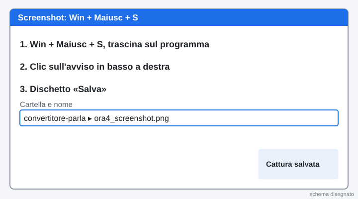
13Consegna: unit1.pas + screenshot
التسليم: unit1.pas + صورة الشاشة
提交：unit1.pas + 截图
Premi il bottone verde: si apre la pagina della consegna. Scegli unit1.pas e lo screenshot e premi «Manda al prof». Il controllo ti dice subito che livello hai fatto. Poi torna qui: il passo diventa verde da solo.
اضغط الزر الأخضر: تُفتح صفحة التسليم. اختر unit1.pas وصورة الشاشة واضغط «Manda al prof». الفحص يقول لك فوراً أي مستوى أنجزت. ثم ارجع هنا: تصبح الخطوة خضراء وحدها.
按绿色按钮：会打开提交页面。选 unit1.pas 和截图，按「Manda al prof」。检查会马上告诉你完成了第几级。然后回到这里：这一步会自己变绿。
Apri la consegna · افتح التسليم · 打开提交页面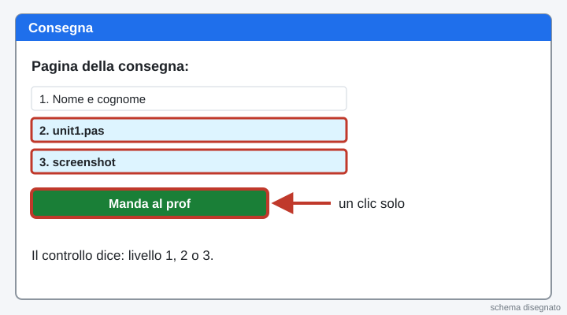
14Mostralo e ricopia sul quaderno
اعرضه وانسخ في الدفتر
展示给别人看，抄在本子上
Fai provare il tuo convertitore al compagno: lui scrive un numero e il suo nome, tu premi «Racconta tutto» e il tuo bottone scherzoso.
دع زميلك يجرّب محوّلك: يكتب رقماً واسمه، وأنت تضغط «Racconta tutto» وزرّك المضحك.
让同学试试你的换算器：他写一个数字和他的名字，你按「Racconta tutto」和你那个好笑的按钮。
- Label1.Caption := Edit1.Text + ' km in metri sono ' + IntToStr(metri) + ' metri';
- Label1.Caption := Label1.Caption + ' altro testo'; aggiunge testo alla fine.
- Testo + testo = testo attaccato. Numero → testo: IntToStr.
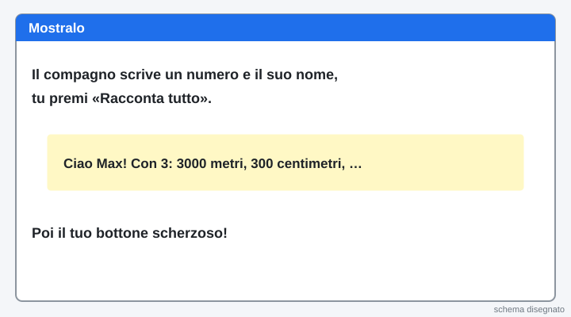
15Bonus: se avanza tempo, «Lo scontrino che parla»
إضافي: إذا بقي وقت، «الإيصال الذي يتكلم»
加分：如果还有时间，「会说话的小票」
Il bottone si accende quando il Professore apre l'esercizio in più.
يُضاء الزر عندما يفتح الأستاذ التمرين الإضافي.
老师打开附加练习时，按钮会亮起来。
Apri «Lo scontrino che parla» · افتح الإيصال · 打开小票练习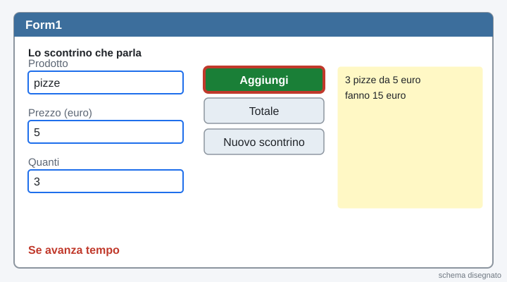
La pagina viene aggiornata spesso durante la lezione: premi F5 per vedere la versione nuova. · اضغط F5 لرؤية النسخة الجديدة. · 按 F5 查看新版本。